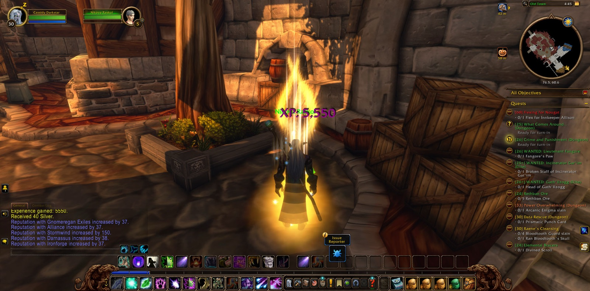
Cassidy Darkstar set out from the Deepwater Tavern in Menethil Harbor and went by Dun Morogh to Ironforge. In Tinker Town he laid down Castpipe's Task and Klockmort's Essentials, and he took up new errands there and in The Library. In The Forlorn Cavern he finished Knowledge in the Deeps. From there the road ran south, through Searing Gorge and the Burning Steppes into Elwynn Forest, and so to Stormwind City, where he finished Retrieval for Mauren in the Mage Quarter. Then he went east to Redridge Mountains. At Lakeshire he saw Ink Supplies through and found Oslow's Toolbox by Lake Everstill. In the Redridge Canyons he gathered iron rivets and iron pikes for the Everstill Bridge. At Alther's Mill he slew a dozen greater tarantulas and broke their eggs. Beyond lay Stonewatch, and there he fell once, and rose, and went on. At Stonewatch Keep he walked a short way beside Aimes, Thordin and Angry, hunters all, and for a moment beside Shadow, a druid like himself.
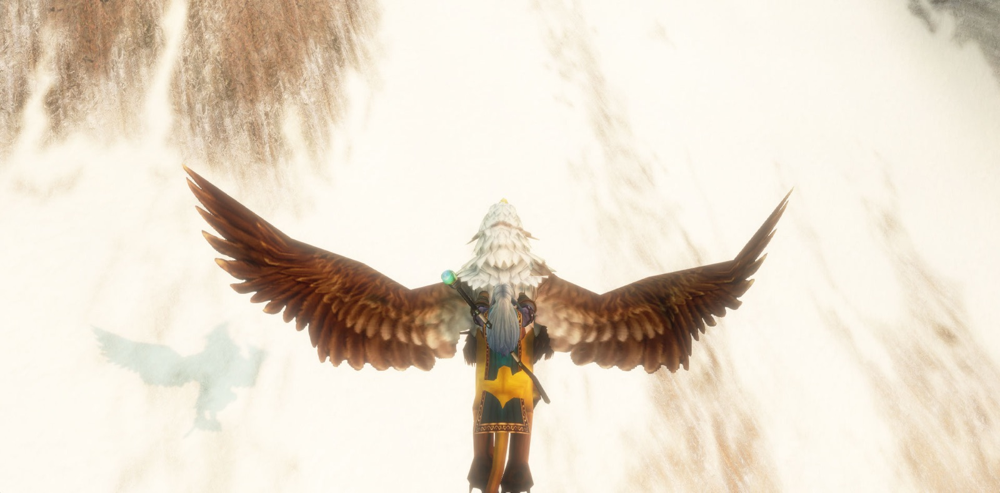
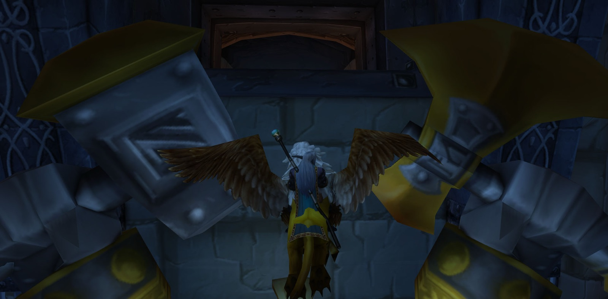
Next he took up the long errand of The Defias Brotherhood. He carried Wiley's Note to Gryan Stoutmantle in Sentinel Tower on Sentinel Hill, and then to Mathias Shaw in SI:7 in Old Town, and then took Shaw's report back again. Last of all he went down to Moonbrook, where he found A Mysterious Message, and that errand was done. After that he turned north again. At Kharanos he finished The Day After, and he looked in at Gnomeregan, where the Addled Lepers were the first to fall to him. Then he passed through the North Gate into Loch Modan. There he cleared the Silver Stream Mine of Filthy Paws, found Bingles and his scattered tools by The Loch, and trapped tunnel rats for Rat Catching. He walked every corner of that country until all of Loch Modan was known to him. Back in Dun Morogh he took wendigo manes from The Grizzled Den and won back Stolen Blasting Powder at Gol'Bolar Quarry.
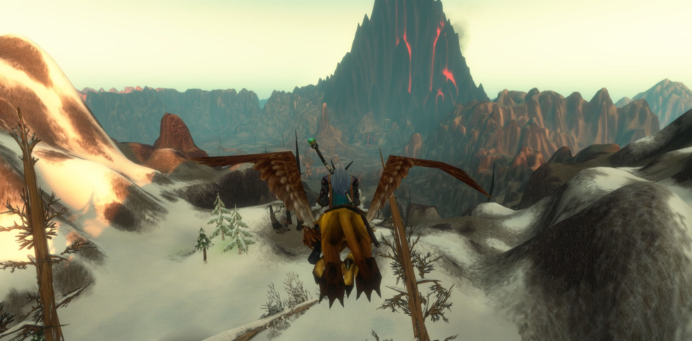
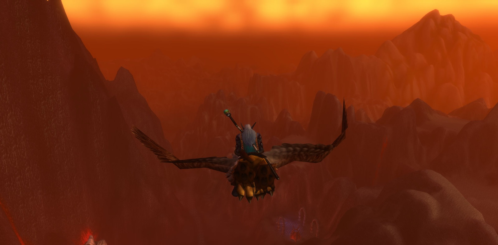
Then he returned to Stormwind, where he gave Stormpike's Order to Furen Longbeard. After that he went down into the Stormwind Stockade. The priest Blessed was with him at first, and then a company gathered that held together long: Licht the paladin, Kaidie the rogue, Shinon the hunter and Zeno the druid. Garrett the warrior joined them only briefly. Together they quelled the uprising of the prisoners. Targorr the Dread fell to them, and Kam Deepfury, Hamhock, Bazil Thredd and Dextren Ward. Many pictures were taken in that place. When Cassidy carried The Color of Blood back to Old Town, he came into the strength of his thirtieth year.
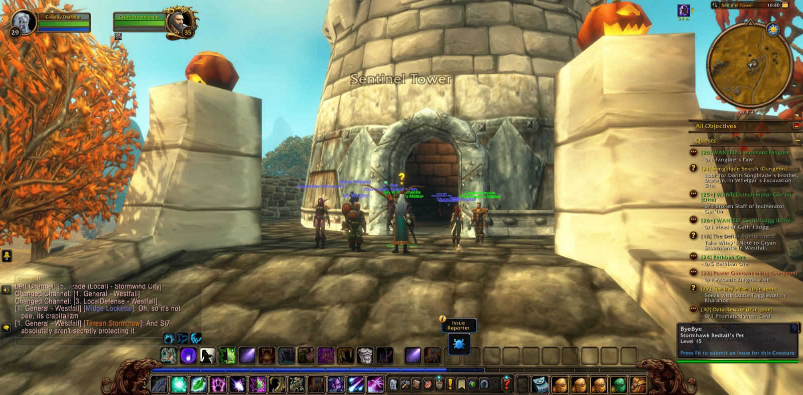
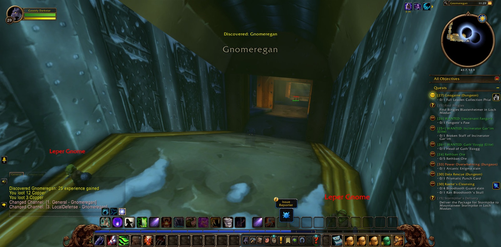
He had one more errand that night, for Hallow's End. He flexed for Nougat in the Trade District, then went to Nighthaven in Moonglade, crossed Darkshore and The Veiled Sea to Darnassus, and there danced for Marzipan. He returned to Ironforge, and Rambleon the hunter joined him there, the companion who stayed longest of all. Wes the priest came too, and Banished and Natalya, rogues both; Maru stayed only a moment. With them Cassidy went down into Gnomeregan, through The Clockwerk Run and The Hall of Gears, and when Wes had gone, Rambleon was with him still. Last of all he stood once more at the gates of Gnomeregan, and the road went on before him.
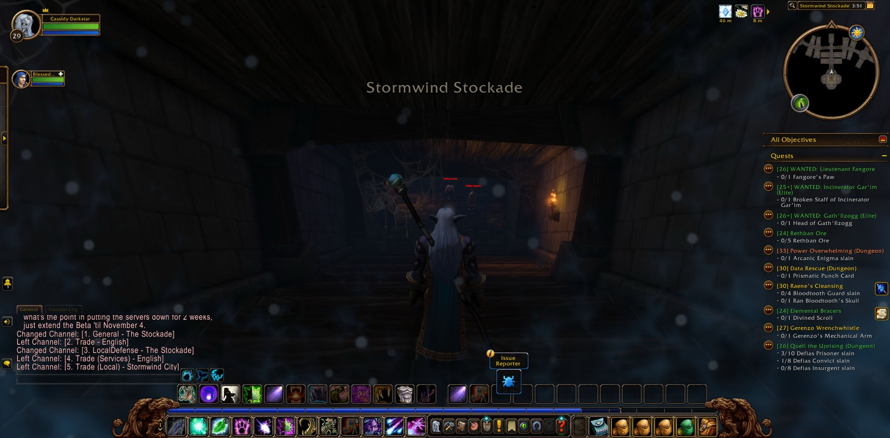
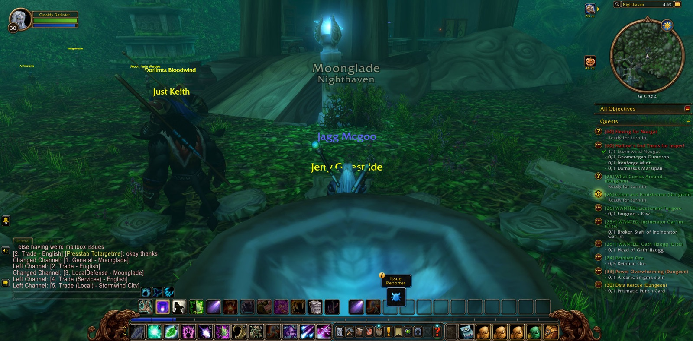
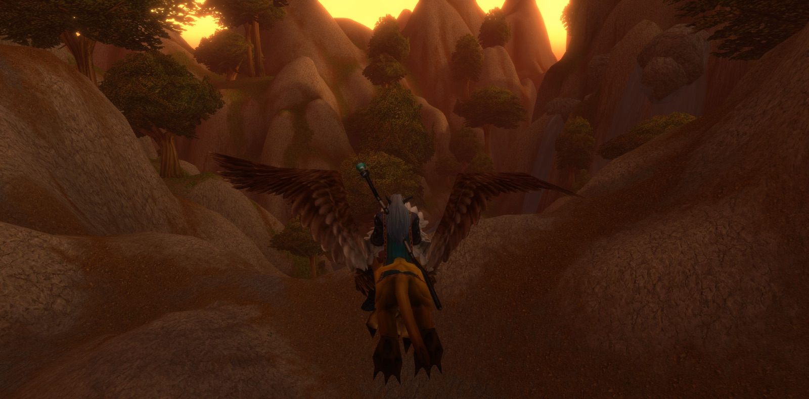
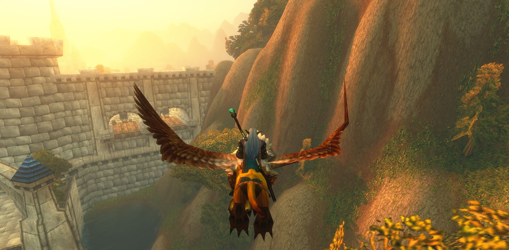
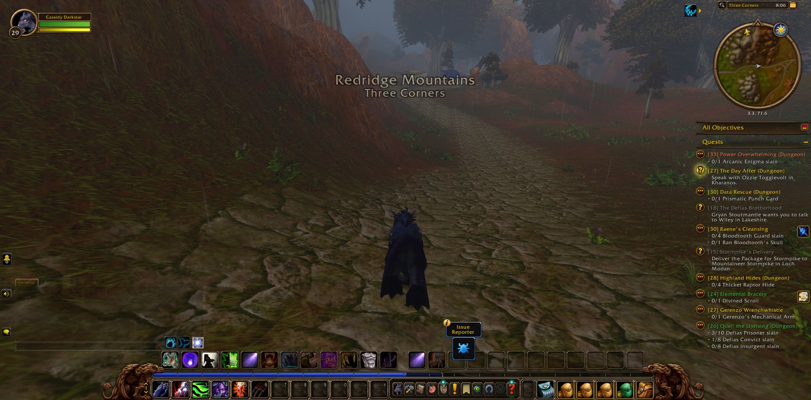
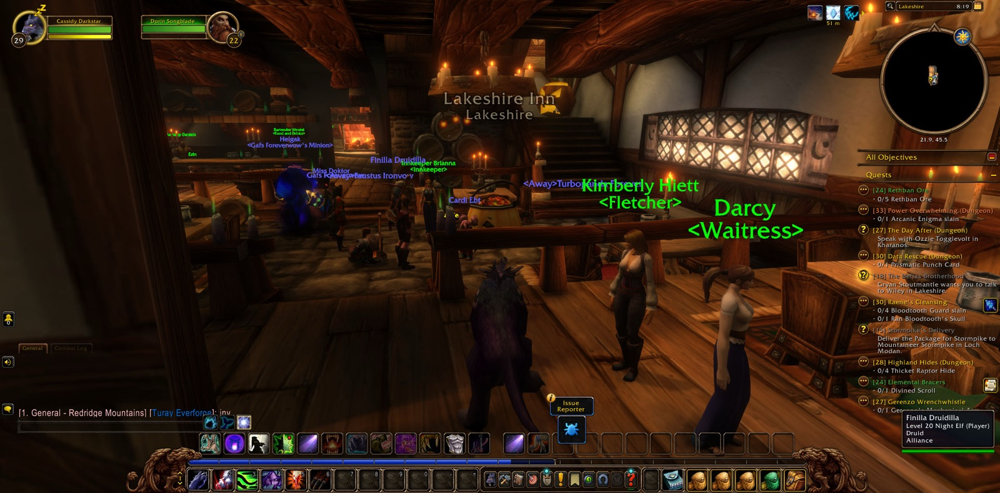
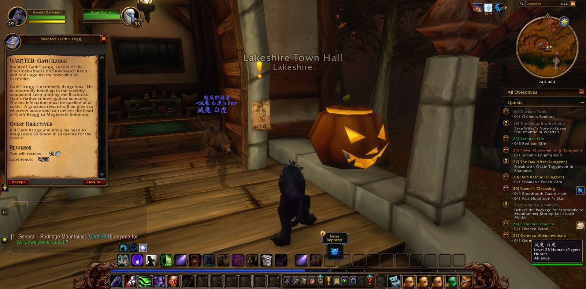
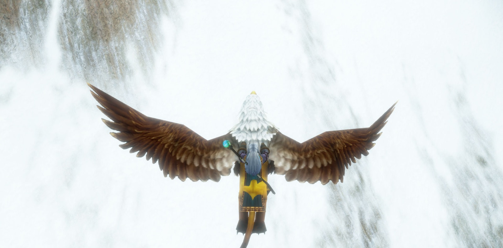